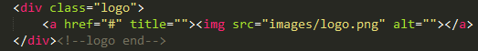
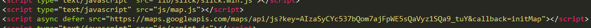
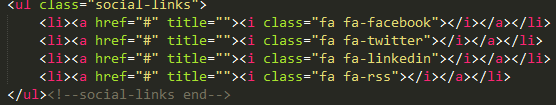

Copyright CMSSUPERHEROES
1. Just Find logo.png in header and replace it with your logo.
HTML:

You just need to go to this url and follow the instructions https://developers.google.com/maps/documentation/geocoding/get-api-key - you will get your api key
You just need to find out "key=" this
and put your "API" into key="" - It will start working
Icons from the most popular icons pack fontawesome
FontAwesome icons:
jQuery http://jquery.com/
Bootstrap http://getbootstrap.com/
Jquery Revolution Slider Jquery Revolution Slider
Slick SLider Carousel http://kenwheeler.github.io/slick/
Animate.css https://daneden.github.io/animate.css/
Isotope Masonary Plugin https://isotope.metafizzy.co/
Jquery Range Plugin http://rangeslider.js.org/
HTML5lightbox Plugin https://html5box.com/html5lightbox/index.php
Select2 Plugin https://select2.org/